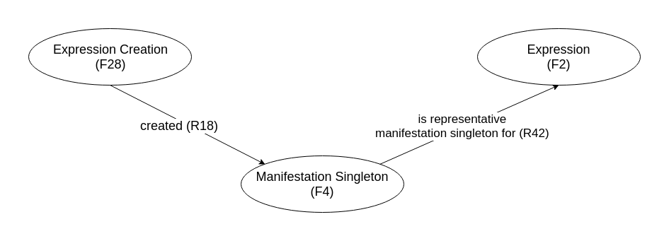

Which Resources
for Which Editions
Modelling the Relationships
between Witnesses
Elena Spadini, Université de Lausanne
Présentation en ligne: elespdn.github.io/talks/20190603_graphSDE/20190603_graphSDE.html
Table of contents
- Gustave Roud and a model for genetic criticism
- Mapping implications
- Towards an upper level ontology for textual criticism

|
Gustave Roud (1897-1976)
Complete works Dir. by Claire Jaquier and Daniel Maggetti Researchers: Alessio Christen, Bruno Pellegrino, Elena Spadini, Julien Burri, Raphaëlle Lacord |
Exemple.
Air de la solitude
Classes
| △ | Diary |
| ▭ | Avantexte |
| ○ | Genetic dossier |
| ◇ | Publication |
Properties
roud-œuvres:isPartOf
| ▭ Avantexte |
→ | ○ Genetic Dossier |
roud-œuvres:isBefore
| ▭ Avantexte |
→ | ▭ Avantexte |
roud-œuvres:resultsIn
| ○ Genetic Dossier |
→ | ◇ Publication |
roud-œuvres:rewrittenIn
| △ Diary (feuilles,petit carnets, etc.) |
→ | △ Diary (cahiers, etc.) |
roud-œuvres:reusedIn
| △ ◇ Diary or Publication |
→ | ○ Genetic Dossier |
FRBRoo ? CIDOC-CRM ?
A solution for
- avantexte and diary
- their relationships with other avantexte materials
- their relationships with publication
???
FRBRoo ?
[Working definition by R. Mahrer]
FRBRoo ?
Expression Creation (F28). "When you scribble the first draft of a poem on a sheet of paper, you produce an instance of F4 Manifestation Singleton"
Manifestation Singleton (F4). "Examples of instances of F4 Manifestation Singleton include manuscripts, preparatory sketches and the final clean draft sent by an author or a composer to a publisher."
Expression (F2). "if a text is revised or modified, the resulting F2 Expression is considered to be a new F2 Expression."
"Revised or modified" are not modelled. Start from scratch every time?
Revised or modified (FRBR00, CIDOC-CRM) ?
is composed of (P106). parts / all
incorporates (P165). parts / all
has modified (P31). applies to E24 Physical Mad-Made Thing.
"This property identifies the E24 Physical Man-Made Thing modified in an E11 Modification. If a modification is applied to a non-man-made object, it is regarded as an E22 Man-Made Object from that time onwards.."

Which ontologies for which editions?
works with multiple witnesses
upper level ontology
for witness relationships
in (all kinds of) textual criticism
Classes
|
Properties
|
upper level ontology
general and explicit
Photos: copyright AGR - CLSR (UNIL)